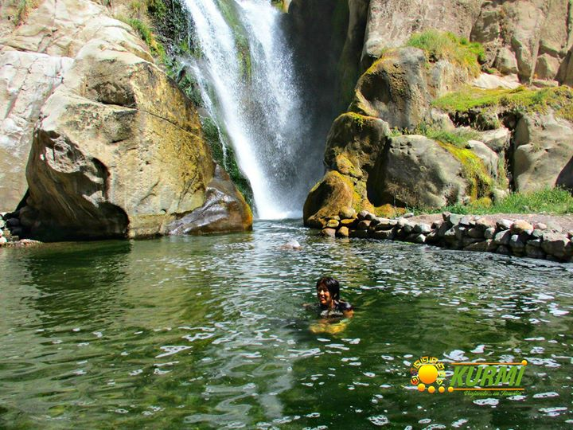
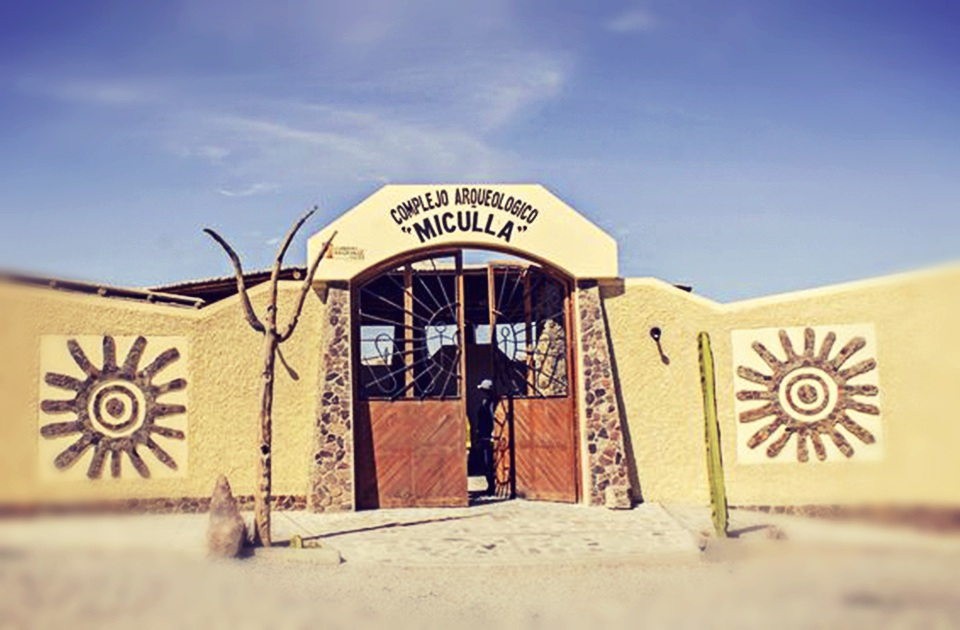
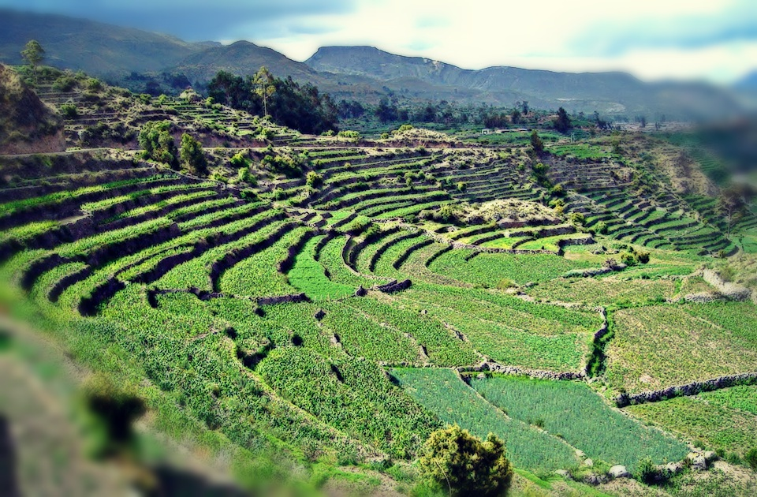

Cataratas de Panina
La Catarata de Panina, cuenta con dos bellos saltos de agua, cuya mayor altura se registra en los treinta metros. El agua de esta cascada, se produce gracias al cauce del Río Camilaca. El curso de la catarata permite la formación de una poza natural, donde los visitantes pueden refrescarse. Tras la recepción del agua en la poza del recurso, esta sigue su recorrido, hasta volver a unirse al río que le dio origen.

COMPLEJO ARQUEOLOGICO DE MICULLA
Son grabados bajo relieve, realizados en la superficie de determinadas rocas utilizando percutores de piedra, metal o hueso. En Miculla, los petroglifos fueron trabajados mediante las técnicas de la percusión, presión, rayado y mixta, utilizando posiblemente instrumentos de piedra y metal. Esta modalidad del Arte Rupestre se ha extendido en todos los valles costeros del Perú, en especial en la región sur; cuya tradición se ha extendido a casi todos los países andinos y sudamericanos.

TARATA
Tarata es considerado un corredor turístico, dentro del cual puede encontrarse diferentes lugares arqueológicos de gran interés. Uno de los sitios más interesantes de Tarata es el camino Tarata-Ticaco, que es un camino inca, a lo extenso del cual pueden encontrarse diferentes sistemas de andenerías que fueran elaborados por los incas, durante su paso por el lugar.